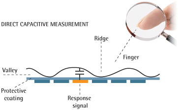

Optical Scanners:
Optical fingerprint scanners are the oldest method to compute fingerprints. This method relies on capturing an image of the fingerprint and then analyzing it. The algorithms that are used for this purpose usually detect unique patterns like ridges, by analyzing the light and dark parts of the image. This form of a fingerprint scanner is essentially a specialized camera. Optical scanners, however, are easy to fool since they rely primarily on using a 2D image of a fingerprint for making comparisons.
Capacitance scanners:
Capacitance scanners are the most commonly used fingerprint scanner. Capacitance scanners utilize the principles associated with capacitance. Unlike the optical scanners, these scanners do not rely on capturing a traditional image of the fingerprint. The scanners use an array of capacitor circuits to store the changes in electrical charge when a fingerprint is introduced into the air gap between two capacitor plates. The original charge that is stored between the two plates of a capacitor with be changed slightly when a finger’s ridge is placed over the plates, whereas the areas with an air gap will remain unchanged. An op-amp integrator can be used to track these changes, which can be recorded by an analogue-to-digital converter.

Ultrasonic scanners:
Ultrasonic scanners are a relatively recent development in the domain of fingerprint scanners. They are built on hardware that consist of an ultrasonic transmitter and receiver. When a fingerprint is placed on the scanner, an ultrasonic pulse is transmitted against the finger. Some of this pulse is absorbed, whereas the rest of it is reflected back to the sensor depending on where the ridges and other details of the fingerprint are present. This helps in capturing the details unique to a particular fingerprint. This scanner also has the capacity to produce a 3D visualization of the fingerprint, provided it is scanned for the required period of time. This feature confers an additional security advantage, since it makes it harder to spoof a fingerprint.